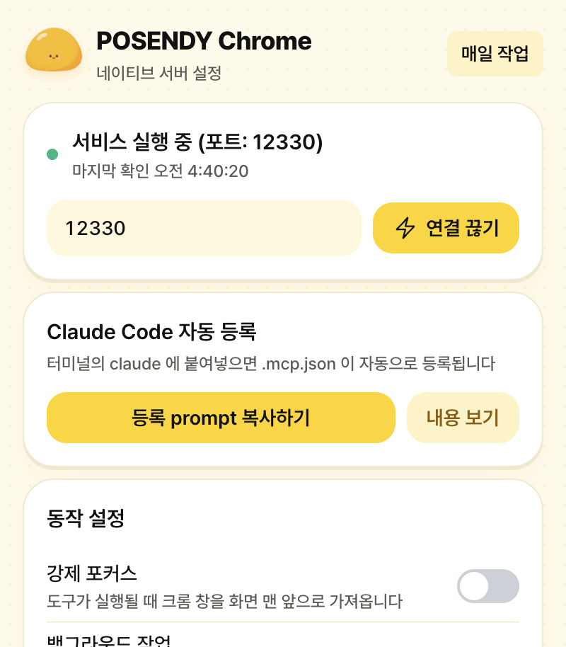

POSENDY Chrome
네이버 블로그 발행
포샌디에서 보낸 글을
내 크롬
이 네이버에 올려요
포샌디 API 키로 연결하면 30초마다 대기 글을 받아 발행
제목, 카테고리, 태그, 공개 범위, 임시저장 지정
네이버 비밀번호를 묻지 않고, 이미 로그인된 크롬을 사용

POSENDY Chrome
브라우저 MCP
Claude Code가
내 크롬
을 도구로 써요
페이지 열기, 클릭, 입력, 스크린샷 등 도구 43개
별도 작업 탭에서 실행해 보던 탭은 그대로
이 컴퓨터 안의 연결(네이티브 메시징)로만 통신
Claude Code
"posendy.com 열고 스크린샷 찍어줘"
↓
POSENDY Chrome
내 컴퓨터의 브리지와 연결된 확장
↓
내 크롬 작업 탭
로그인 상태 그대로 페이지 작업
POSENDY
Chrome
네이버 블로그 발행과
브라우저 MCP